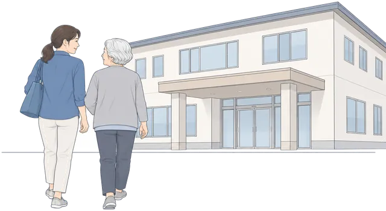

まずは、川崎市にどんな施設があるか
- 特別養護老人ホーム（特養）60か所介護が多く必要になった方が暮らす、介護保険の施設です。原則、要介護3以上の方が対象です。
- 介護付き有料老人ホーム115か所施設の職員から介護を受けながら暮らす、民間の老人ホームです。
- 住宅型有料老人ホーム86か所食事や日常生活の手助けを受けながら暮らせる、民間の老人ホームです。
- サービス付き高齢者向け住宅（サ高住）51か所安否確認や生活相談のサービスが付いた、高齢者向けの賃貸住宅です。
- グループホーム（認知症の方の共同生活）135か所認知症の方が、職員の手を借りながら少人数で一緒に暮らす施設です。
- 介護老人保健施設（老健）18か所退院後などにリハビリを受け、家での暮らしに戻ることを目指す介護保険の施設です。
合計 465か所。市内の特養の定員は、あわせて5,578人です。
施設の月額は、どれくらい？
- 介護付き有料老人ホーム：月 約29.6万円（真ん中の額）
- 住宅型有料老人ホーム：月 約12.5万円（介護代は別）
- サービス付き高齢者向け住宅：月 約20.1万円（介護代は別）
- 特養：要介護3〜5の方で、月 約9.7万円〜13.9万円（追加料金など別）
- 特養：介護保険の料金改定に伴い、月額の目安を確認中です。
目安の金額です。下で予算を出すと、区ごとの予算以内の数も分かります。
1まず、月の予算を計算する
- 1金額を入れる
- 2結果を見る
- 3川崎市で探す
入力した金額は保存されず、外部にも送られません。
年金が2か月分まとめて振り込まれる場合は、1か月分にして入力してください。
何年分、払えるようにしますか？
あれば、こちらの金額も入れられます施設以外にかかるお金手元に残しておくお金家で暮らす家族の生活費入居時に払うお金
分かる金額だけで大丈夫です。空欄でも計算できます。
ここに入れた分を引いて、施設の月額と比べます。
急な入院や家の修理に備えて残す分です。
介護に使えるお金から一度だけ引きます。分からなければ空欄で。
家で暮らす家族の生活費を先に確保し、施設に使える額を出します。家に残る人がいなければ空欄で。
上の生活費も入れた場合だけ、計算に加えます。
入力した金額以内の前払金が必要なプランも、施設数に含めます。
まずは、分かる金額だけで大丈夫です。

2施設の費用に、月いくらまで出せるか
金額を直すと、結果もその場で変わります。もう一度ボタンを押す必要はありません。
3希望する地域で施設を探す
区と要介護度を選ぶと、施設の数や月額を絞って見られます。まだ決まっていなければ、選ばずに川崎市全体の情報を見ることもできます。
住んでいる区以外も選べます。
市区町村が認定する、介護が必要な程度です。
施設数や月額は、市などの公開情報です。詳しい料金や入居条件は、施設に確認できます。
まずは川崎市の施設数と月額をご覧いただけます。上で予算を出すと、予算以内の数も分かります。
特別養護老人ホーム（特養）川崎市に 60か所
介護が多く必要になった方が暮らす、介護保険の施設です。原則、要介護3以上の方が対象です。
月額の目安：要介護3〜5・1割負担で月 約9.7万円〜13.9万円（相部屋〜個室）
施設ごとの追加料金（加算）や日用品代は別です。実際の請求は、目安より高くなる場合があります。
定員5,578人（定員29人以下の小さい特養：8か所）。
川崎市の特養は市内まとめて受け付け、要介護度などの点数で入居の順番が決まります。申し込んだ順ではありません。
料金と入居条件を詳しく見る
収入や貯金などの条件に当てはまれば、申請によって食費と部屋代が軽くなる場合があります。詳しくは下の「食費と部屋代が軽くなる場合」をご覧ください。
介護付き有料老人ホーム川崎市に 115か所
施設の職員から介護を受けながら暮らす、民間の老人ホームです。
月額の目安：真ん中 約29.6万円／安い施設 約15.4万円／高い施設 約93.9万円（月額が分かる103件）
介護保険の自己負担は、1割負担なら月 約1.7万円〜2.6万円（要介護1〜5）。月額に含む施設が多いものの、別の場合もあります。病院代・おむつ代は別です。
住宅型有料老人ホーム川崎市に 86か所
食事や日常生活の手助けを受けながら暮らせる、民間の老人ホームです。
月額の目安：真ん中 約12.5万円／安い施設 約7.3万円／高い施設 約29.7万円（月額が分かる76件）
月額のほかに、介護サービス代（介護保険利用分の1〜3割）がかかります。病院代・おむつ代も別です。
サービス付き高齢者向け住宅（サ高住）川崎市に 51か所
安否確認や生活相談のサービスが付いた、高齢者向けの賃貸住宅です。
月額の目安：真ん中 約20.1万円／安い施設 約12.8万円／高い施設 約27.8万円（月額が分かる38件）
月額のほかに、介護サービス代（介護保険利用分の1〜3割）がかかります。病院代・おむつ代も別です。
料金と入居条件を詳しく見る
施設の数は神奈川県の登録情報から、月額は有料老人ホームにも該当する施設の料金資料から調べています。
グループホーム（認知症の方の共同生活）川崎市に 135か所
認知症の方が、職員の手を借りながら少人数で一緒に暮らす施設です。
介護保険の自己負担のみ：月 約2.4万円〜2.8万円（要介護1〜5・1割）
家賃・食費・光熱費は別で、合計は施設によって違います。見学や電話で確認を。
原則、川崎市に住民登録がある方が対象です。
介護老人保健施設（老健）川崎市に 18か所
退院後などにリハビリを受け、家での暮らしに戻ることを目指す介護保険の施設です。
月額の目安：要介護1〜5・1割負担で月 約8.5万円〜14.1万円（相部屋〜個室）
施設ごとの追加料金（加算）や日用品代は別です。実際の請求は、目安より高くなる場合があります。
料金と入居条件を詳しく見る
収入や貯金などの条件に当てはまれば、申請によって食費と部屋代が軽くなる場合があります。